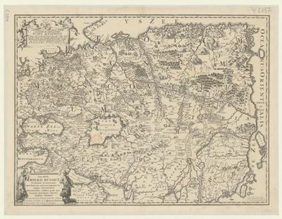

Ides · 1700-1709 · Wikimedia Commons

Explore the map in deep zoom
New Map of the Russian Empire, by Ides, 1700-1709. Image: Wikimedia Commons. One of the 137 maps of Tartary in the TARTARY Project's collection at HKUST, catalogued on tartary.vercel.app. Its texts have not been transcribed yet.